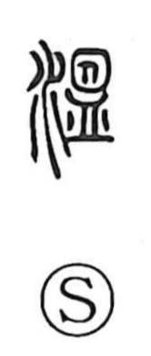

温

Uncategorized
Kun: atatakai, atataka, atatamaru, atatameru, odayaka | On: on
warm ・ to warm ・ mild ・ gentle
Explanation
Originally written 溫, this is a phono-semantic character: the phonetic element gives the sound on, while the graphic scene supplies the meaning. It depicts something being heated in a basin-like vessel (ban), the contents visibly stirred and set in motion by rising heat. From this vivid image of warmth coursing through a container, the character came to mean warm, warm/mild in climate, and by extension, when applied to a person’s disposition, gentle and mild. The modern form 温 preserves this sense while simplifying the original graph.